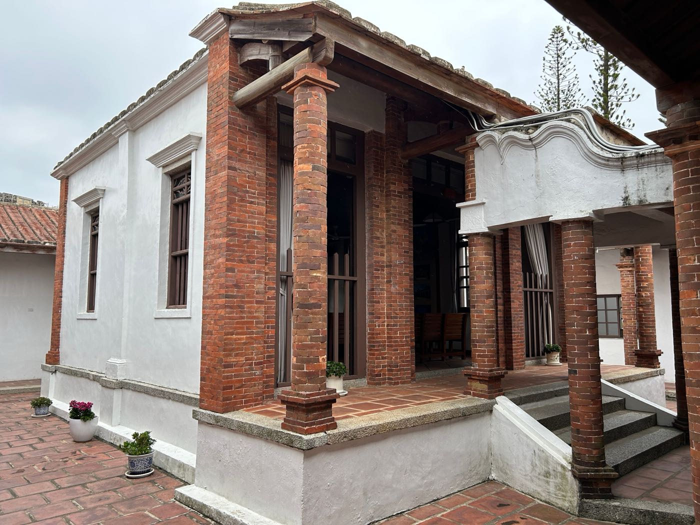

售後回租完整指南：名下有房但缺現金？這樣解決
售後回租是把房子過戶給投資方、同時簽租約繼續住在原屋，並可保有日後依約買回的權利（三者一組）。這篇文章帶你看懂整個流程、費用結構、適合對象，以及你最在意的：錢什麼時候入帳。是否適合依個案不動產與財務狀況評估。

售後回租會不會被騙？簽約前必看的 5 件事
「賣房又能住」是不是陷阱？售後回租本質是賣屋＋租約、產權會過戶。教你簽約前看懂買回、租金、租期、違約、履約保障，分辨正派方案與話術。
售後回租 vs 二胎 vs 民間轉銀行，我該選哪個？
名下有房卻被拒或缺現金，四種方案用一張比較表＋決策指南，依信用、急用金額與是否保留產權幫你選對。

不動產融資名詞百科：信用、二胎、售後回租一次看懂
聯徵、DBR、DSR、二胎、售後回租、法拍、限貸令…38 個不動產融資與房產危機名詞一次解釋清楚。
台北新北不動產走勢與銀行放貸分析
房市量價、銀行 DBR/DSR 與貸款成數走向，先看懂市場脈動再決定資金安排。實際條件依個案與銀行核定為準。
不動產融資數據速查表：稅率、利率、DBR／DSR 一次查
房地合一稅與土增稅級距、契稅、DBR22 與 DSR、民間月息與銀行年息結構、售後回租成數、信用瑕疵留存時間，一張表查清楚（皆依個案與主管機關核定）。

房子要被法拍怎麼辦？查封、拍賣前你還有的幾條路
法拍不是一夕發生。拆解法拍時間軸與拍定前名下有房可走的 4 條路：債務整合、二胎、民間轉銀行、售後回租，附反詐騙提醒。

多筆貸款壓著喘不過氣？整合一次的完整攻略
房貸＋二胎＋信貸同時壓著，負債比過高讓銀行拒絕往來。貸款整合可以把多筆高息債務合併成一筆低息，每月支出立刻下降。

民間借貸月利率2%？現在就能轉銀行的3個條件
民間借貸利率是銀行的10倍以上。只要房子還在名下、有穩定收入、懂得準備文件，你很可能現在就能申請轉銀行貸款，每個月省下好幾萬。

信用瑕疵被銀行拒絕？名下有房還是有機會
過去的信用事件會留在聯徵紀錄5到7年，但這不代表你完全沒有選擇。只要名下有不動產，就有機會透過資產換取銀行的信任。

包租代管 vs 自己管：中和屋主的真實比較
自己出租省代管費，但你算過找租客、處理維修、收租催繳的隱性成本嗎？這篇文章用真實數字告訴你，哪一種對屋主更划算。

銀行貸款審核在看什麼？5個決定核貸的關鍵指標
收入、信用、負債比、擔保品、職業穩定性——銀行批貸前會把你從頭到腳看一遍。提前知道這5個指標，準備文件就有方向。

房屋淨值貸款完整指南：用房子的價值借到你需要的錢
房屋淨值＝市值－現有貸款餘額。只要淨值夠高，就能向銀行申請增貸或二胎，換出你需要的現金，而且利率遠低於信貸。

DSR 超標被銀行拒絕？名下有房還有這 3 條路
負債比超標是台灣最常見的拒貸原因。本文解析 DSR 怎麼算、超標怎麼辦，以及名下有房屋主的三種實際解法與試算比較。
央行選擇性信用管制上路，名下有房的人怎麼辦？
打房政策讓銀行貸款成數縮水，但名下有房的人並非沒有出路。本文解析政策影響，以及售後回租、貸款整合在管制下的應對空間。
繼承的房子可以貸款嗎？3 個關鍵條件完整解析
繼承房屋後想貸款，銀行的審查和一般房子有什麼不同？解析繼承登記、共有人、房屋狀況 3 個關卡，以及繼承房子可申辦的 4 種方案比較。
退休族房產活化 3 種方法：月息繳了 10 年本金還在那裡
名下有房但現金越來越少？本文比較民間轉銀行、售後回租、以房養老 3 種方法，含真實試算，幫退休族找到最適合的出路。
包租代管費用怎麼算？包租、代管與政府方案一次看懂
費用沒有公定價，只有標準問法：代管問服務費幾成、包租問折讓後實拿多少、社宅方案問免稅補助怎麼算。本文攤開房東實拿，附四種出租方式比較與業者合法查證法。
貸款整合好嗎？適合誰、不適合誰、與債務協商差在哪
整合好不好看三個檢核：總利息降不降、月付集不集中、有沒有清償終點。本文誠實評估適合誰、勸退誰，拆穿年限拉長陷阱，並比較與債務協商的差異。

二胎房貸詐騙怎麼分辨？五大手法、話術特徵與查證五步
核貸前收費、收走權狀存摺、要簽空白文件——三件事任一出現，先停下查證。本文拆解五大詐騙手法、八句高風險話術，教您商工登記、165、地政謄本查證五步。
售後回租是什麼？流程、費用、風險與適合對象一次看懂
把房屋過戶給投資方換資金、簽租約續住、保有依約買回。本文說明五步驟流程、費用結構、四大風險與自保清單，並比較它與二胎房貸的差異。
新北貸款整合怎麼開始？有房與無房的月付重整地圖
卡循、信貸、分期各咬一口——先把月付攤開，再分路：名下有房走以房整合、無房走信貸整合。三種新北情境整合各自解什麼題，附各節點專頁分流。

新北二胎房貸怎麼評估？銀行趨嚴下的殘值活用地圖
房貸利率創高、核貸成數走低——銀行趨嚴下，殘值活用成為顯學。拆解老公寓帶、高總價帶與自營業者三種情境的二胎邏輯，附各區專頁分流與挑選防詐標準。

永和房屋貸款怎麼選？增貸、二胎到售後回租的決策地圖
全台最擠、也最老——從永和的小坪數老公寓與長輩宅結構出發，依序評估增貸、轉貸、二胎、整合與售後回租五條路，附繼承與共有持分的產權盤點。

新北售後回租怎麼評估？三種在地情境與挑選標準
屋齡壓估值、一胎壓殘值——從新北的市場結構拆解老公寓帶、高總價帶與自營業者三種典型情境，判斷順序一律二胎先評估，並附五個可查證的挑選標準與各區專頁導引。
板橋二胎房貸：新板大樓到老公寓，殘值空間怎麼估
在板橋辦二胎，關鍵在在地估價：新板特區高總價大樓、府中後埔老公寓、浮洲重劃帶，三種殘值型態完全不同。鋮馨同生活圈實價比對，總部一線之隔可當面對保。
中和二胎房貸怎麼辦？條件、利率、流程與防詐全解析
在中和辦二胎，成敗看三件事：算清殘值空間、比總費用而非月付金、選登記可查能當面對保的合法業者。附申辦條件、利率區間、五步驟流程與防詐辨識。
二胎房貸是什麼？利率、條件、流程一次看懂
房子已有一胎貸款還沒還清，還能再借嗎？可以，這就是二胎。本文說明二胎房貸的利率行情、申請條件，以及什麼時候選二胎比增貸更划算。

被銀行拒貸後該怎麼辦？名下有房第一步這樣做
被拒貸後最糟的一步是立刻換下一家送件，越送聯徵查詢越多、分數越低。先搞懂銀行卡你哪裡——信用、收入認定還是負債比——名下有房就還有別條路可評估。

信用瑕疵還能貸款嗎？名下有房 vs 沒房的兩條路
信用有瑕疵不等於人生死刑。銀行看的是信用分數，但名下有房代表你手上有不動產這張牌。一次看懂有房、沒房各自能走的路。
自營業者貸款攻略：銀行為何特別嚴？送件前 5 個關鍵準備
自營業者收入多是現金、帳面漂亮不起來，銀行就認不出你的還款力。送件前先備好這 5 樣，把「賺得到」變成「證明得了」。
房貸繳不出來怎麼辦？5 個替代方案完整比較
房貸繳不出來別等到法拍。寬限期、增貸、二胎、整合、售後回租，5 個替代方案一次比較，趁還有時間找對的路。

民間借款太多、信用已損，名下還有房，還有出路嗎？
信用已經花掉、民間越借越多，但名下還有房——這張牌往往比你以為的有份量。看懂以不動產為基礎、把高息債分階段轉回銀行體系的評估方向。
民間借款只繳得起利息、本金不動？先看懂這筆利率數學
只繳得起利息、本金卻幾乎不動，往往不是你不努力，是利率太高、錢卡在錯的軌道。看懂這筆利率數學，才知道怎麼把它轉回銀行。
債務協商 vs 貸款整合差在哪？搞錯一個會傷信用
協商是跟債權人談判、會在聯徵留紀錄影響後續幾年；整合是借新還舊、保住信用。一張表看懂兩者差別與你該怎麼選。